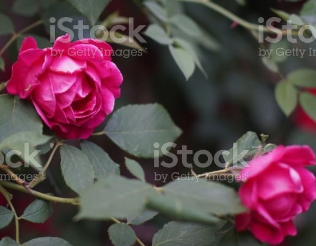

Please find my recipes in this website when spending more than 25 minutes in the kitchen just won’t do and, unlike lots of recipes that claim to simplify dinnertime, ours are truly all-in-one meals. You could toss some bread on the table, if you’d like, but ultimately.
PAGEtwo we’ve got multiple food groups on each plate and every bowl because, really, who’s got time for several courses? Pin this slideshow of simple dinner ideas for later when you’re finding your go-to menus are getting a little tired.